七、数据聚合和分组操作
1.GroupBy机制
groupby的结果会自动过滤掉非数值列

1 | ####以自身的列作为键 |
分组的键还可以是正确长度的任何数组：
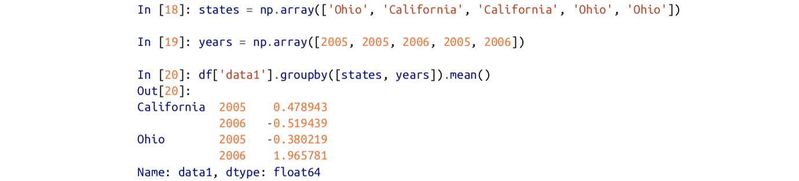
grouped.size()返回一个包含组大小信息的Series。
（1）遍历各分组
1.

2.
3.
4.
axis=1 表示将每一列分给不同的组
默认axis=1表示将每一行分给不同的组
（2）使用字典/Series分组
1.使用字典作为索引


2.使用Series作为索引


（3）使用函数分组
将行索引作为调用函数的参数，以返回值作为分组依据
df.groupby(len).sum()
（4）以索引层级进行分组

2.数据聚合
apply方法传入的是整个dataframe，而agg方法传入的是每一列数据
常用的聚合方法
| 函数名 | 描述 |
|---|---|
| count | 非NA值的数量 |
| sum | 非NA值的和 |
| mean | 非NA值的均值 |
| median | 非NA值的中位数 |
| std，var | 无偏的（分母n-1）标准差和方差 |
| min，max | 非NA值的最值 |
| prod | 非NA值的乘积 |
| first，last | 非NA值的第一个，最后一个 |
Series的方法生来就可以用于聚合
自定义聚合方法：

同时使用多个聚合函数：传入函数名列表
grouped.agg(['sum','std',peak_to_peak])
使用多个聚合函数时的列名难以辨认：可以通过传入元组列表（name，function）
grouped.agg([('mean','foo')])
对不同的列使用不同的聚合函数：传入字典列表{列名：函数名}
grouped.agg({'tip':np.max})
grouped.agg({'tip':[np.max,'sum']})
返回不含行索引的聚合数据：
df.groupby('key1',as_index=False)
也可以将结果进行reset_index()获得，但as_index方法可以避免不必要的计算
3.应用（split-apply-combine）
对分组后的df采用apply（）方法，函数必须返回标量值或pandas对象

apply方法可以传入关键字参数：
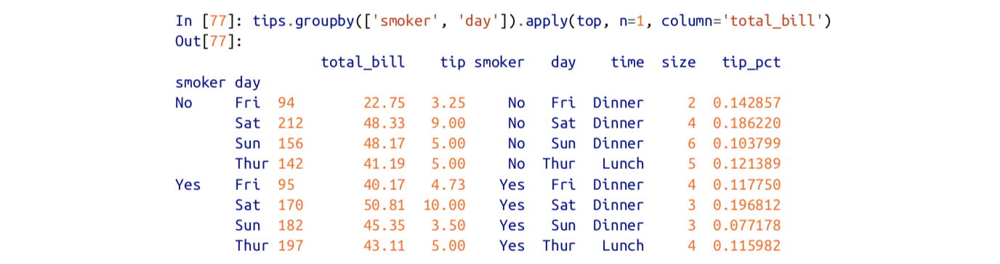
（1）压缩分组键
不显示分组的键：
df.groupby('key1',group_keys=False)
（2）分位数与桶分析
cut后的对象可直接传入groupby方法。


4.数据透视表与交叉表
df.pivot_table(index=['day','smoker'])
如果只想在tip_pct和size上聚合，并根据time分组。把day放入行，smoker放入列。
df.pivot_table(['tip_pct','size'],index=['time','day'],columns='smoker')
添加margins=True会添加All行和列表标签，这会返回单层中所有数据的分组统计值。All为均值
可以添加aggfunc参数：

参数：
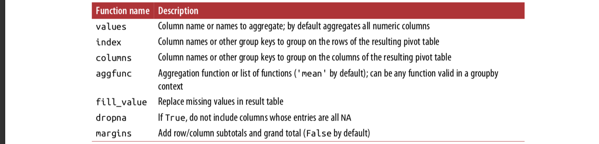
（1）交叉表
计算的是分组中的数据出现的次数。
pd.crosstab([df.time,df.dat],tips.smoker,margins=True)
参数依次为：index，columms，
八、时间序列
pd.read_csv(filename,parse_dates=True,index_col=0)
1.日期和时间数据的类型及工具
常用的python库：time,datetime,calendar
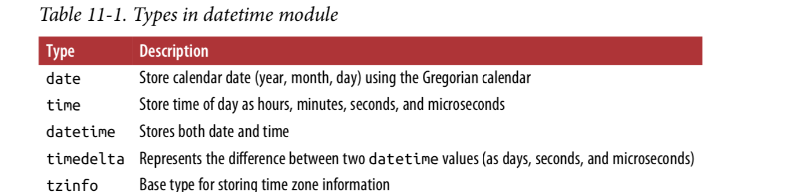
(1)字符串与datetime的转化
str方法和strftime方法

datetime格式


使用相同的方法可以将str转换为datetime格式
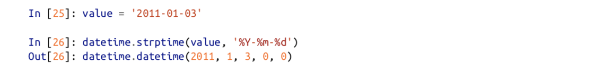
dateutil库能够自动解析日期并转换为datetime格式（日期在月份前可以使用dayfirst=True参数）：
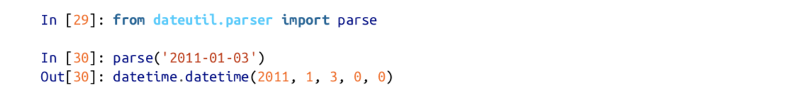
pandas中的日期：
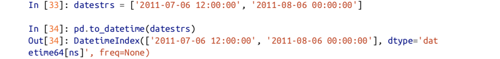
2.时间序列基础
不同索引的时间序列之间的算术运算在日期上自动对齐

（1）索引、选择、子集
索引：
1）基于标签索引

2）使用能解释为日期的字符串
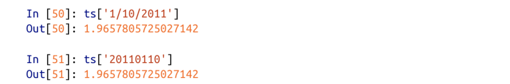
3）使用切片：通过传递年份或年份加月份（可以使用不在索引中的时间戳进行切片）

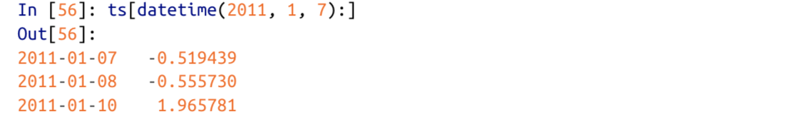
使用truncate切片：

3.日期范围、频率和移位
（1）生成日期范围
1 | pd.date_range('2012-04-01','2012-06-01') #默认以天为间隔 |

（2）频率和日期offset
pandas.tseries.offsets中有Hour，Minute等对象，大多数情况下不需要主动创建
可以传递的freq参数：‘4h‘，’1h30min‘

offset可以通过加法结合：

(3)移位
将时间戳对应的数据前移或后移。

指定freq后，将会改变时间戳，而不会改变数据
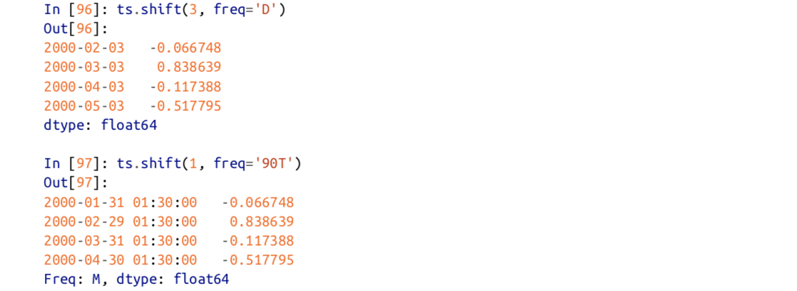
使用offset： 
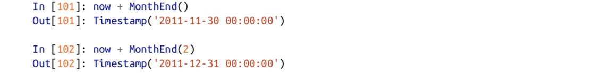
rowback和rollforward：

offset与groupby结合
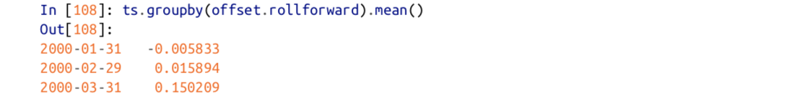
4.时区处理
（1）时区的本地化和转换
1 | df.index.tz 查看当前的index的时区属性 |
(2)时区感知时间戳对象的操作
时间戳对象也可直接进行时区操作
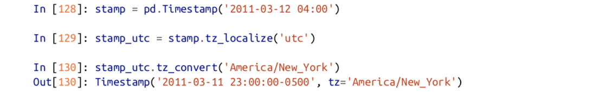

（3）不同时区间的操作
两个时区不同的时间序列联合时，结果为UTC时间
5.时间区间和区间算数
1 | pandas区间： |
6.重采样
从低频率转换到高频率：向上采样
从高频率转换到低频率：向下采样
resample方法的参数：

（1）下采样

（2）开高低收
ts.resample('5min').ohlc()
(3)向上采样与差值
使用asfreq()在不聚合的情况下转到高频率
df.resample('D').asfreq()
差值或向前填充
df.resample('D').ffill()
(4)使用时间区间进行重采样
由于区间涉及时间范围：
- 在向下采样中，目标频率必须是原频率的子区间
- 在向上采样中，目标频率必须是原频率的父区间
7.移动窗口函数
1 | df.COL1.rolling(250,min_periods=10).mean() |
九、高阶Pandas
1.分类数据
（1）Categorical对象

Series转换为category类型的数据

category.value对象有两个属性：codes和categories。


可以通过python序列直接创建pandas.Categorical对象
通过codes和categories构建

访问category对象的分类方法(通过cat)：
1 | df1.cat.codes |
Categories方法
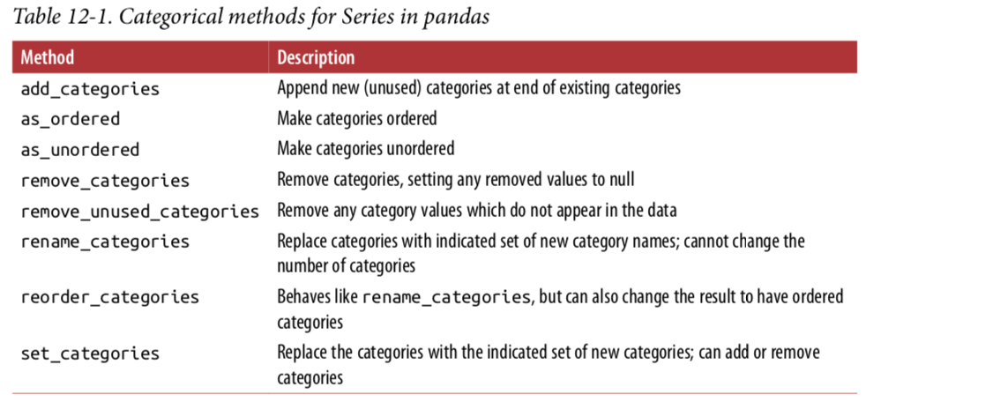
1 | pd.Categorical(df['thal']).cat.codes #Categorial对应的index值 |
2.GroupBy高阶应用
（1）分组转换和展开Groupby
1 | df = pd.DataFrame({'key':['a','b','c']*4,'value':np.arange(12)}) |
（2）方法链技术
方法链可以减少中间变量
两种等价的赋值方式

（3）pipe方法
两种等价形式

十、Python建模库
将pandas的DataFrame对象转换为numpy数组：df1.value
Patsy库
Statsmodels库
scikit-learn库